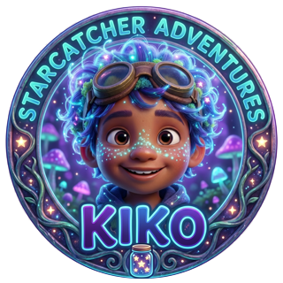
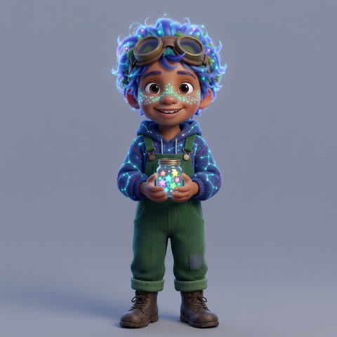

Starcatcher Adventures
Little stories, big lessons
Starcatcher Adventures is a series of short animated stories for children aged 4 to 8. Kiko and friends get into funny, dramatic and adventurous situations, and each story ends with one kind lesson: telling the truth, sharing, being brave, saying sorry.
Where to watch
New shorts are published on our YouTube channel, Starcatcher KIKO, and on other short-video platforms. All videos are marked as made for kids.
How the videos are made
The stories are written and reviewed by a person, and the animation is generated with AI tools. Every video is checked by a person before it is published.
The Starcatcher app
"Starcatcher" is a private tool that runs on the creator's own computer. It prepares the videos and uploads them to the creator's own YouTube channel through the YouTube API. It has no other users. See the privacy policy for what it accesses.